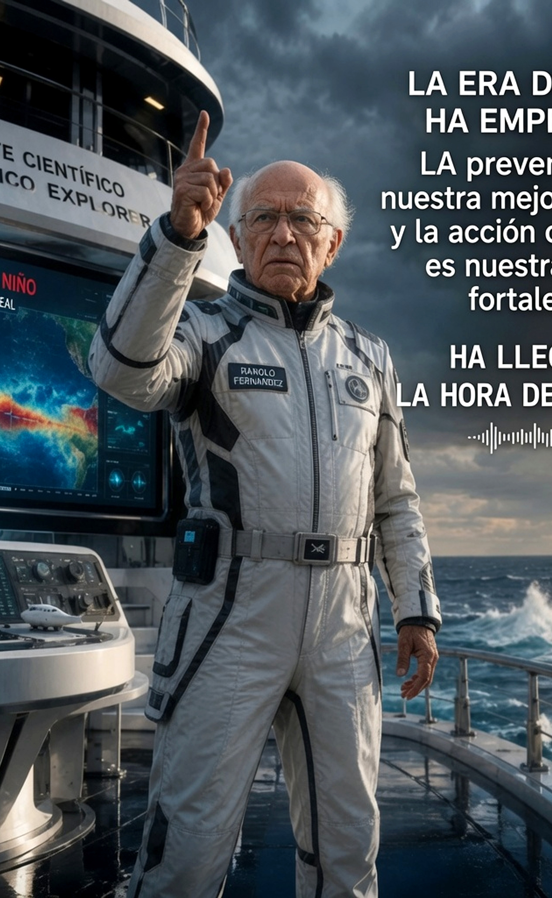
CAPÍTULO XX · CLIMATOLOGÍA
LA ERA DEL NIÑO
El fenómeno oceánico que redefine el clima global — CAZADOR Ciencia Peruana
▶ Ver VideoRepositorio Científico FARVET
Basado en el pensamiento científico del Dr. Manolo Clemente Fernández Díaz
Plataforma CAZADOR — documentales, archivo PDF y divulgación científica peruana
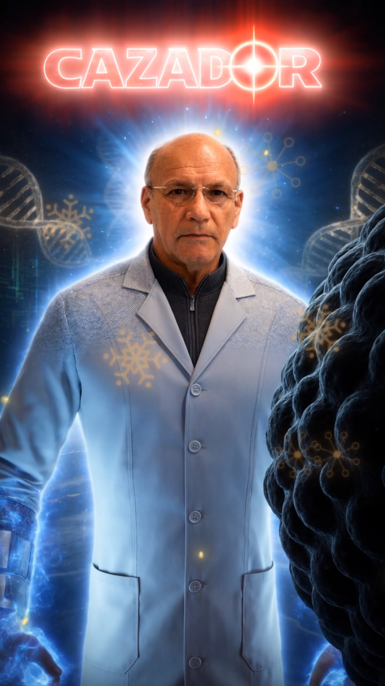
Médico Veterinario · Ph.D. en Biología
Médico Veterinario, destacado científico con un Ph.D. en Biología. Especialista en producción de vacunas vivas, inactivadas y recombinantes para uso agropecuario. Investigador Principal de la Universidad Nacional "San Luis Gonzaga" de Ica, Gerente General del Grupo FARVET. Profesor Extraordinario y Doctor Honoris Causa.

CAPÍTULO XX · CLIMATOLOGÍA
El fenómeno oceánico que redefine el clima global — CAZADOR Ciencia Peruana
▶ Ver Video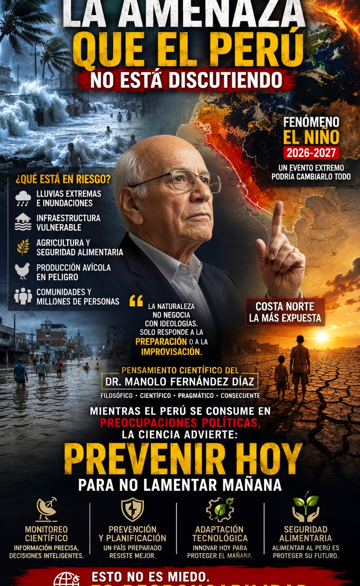
CAPÍTULO XIX · CLIMATOLOGÍA
La sincronización climática que desafía al país — CAZADOR Ciencia Peruana
▶ Ver Video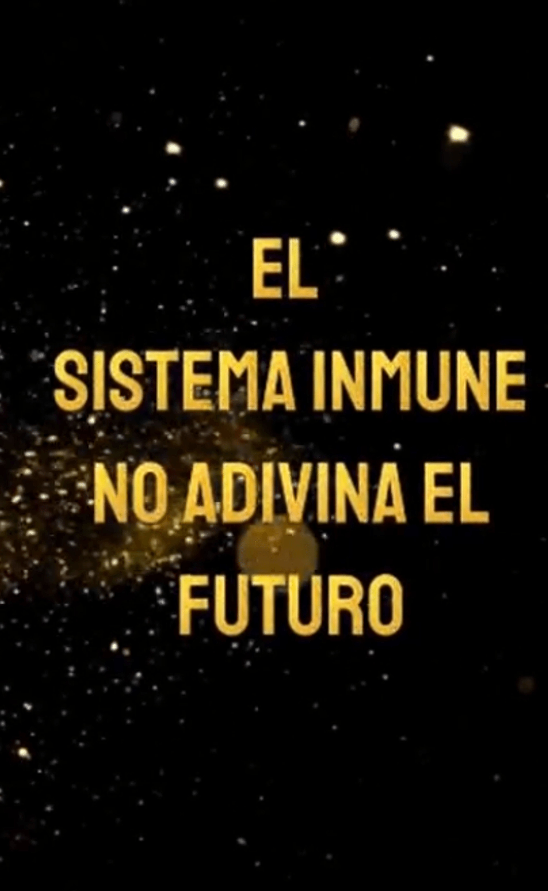
CAPÍTULO XVIII · INMUNOLOGÍA
La defensa biológica frente a lo desconocido — CAZADOR Ciencia Peruana
▶ Ver Video
CAPÍTULO XVII · GENÉTICA
El código secreto de la vida eterna — CAZADOR Ciencia Peruana
▶ Ver Video
CAPÍTULO XVI · CONOCIMIENTO
La llama del saber que transforma la ciencia — CAZADOR Ciencia Peruana
▶ Ver Video
CAPÍTULO XIV · SUPRA CONCIENCIA
Ver lo invisible para lograr lo imposible — CAZADOR Ciencia Peruana
▶ Ver Video
CAPÍTULO XIII · ONCOLOGÍA
Cuando la ciencia enfrenta el tiempo — Dr. Manolo Fernández Díaz
▶ Ver Video

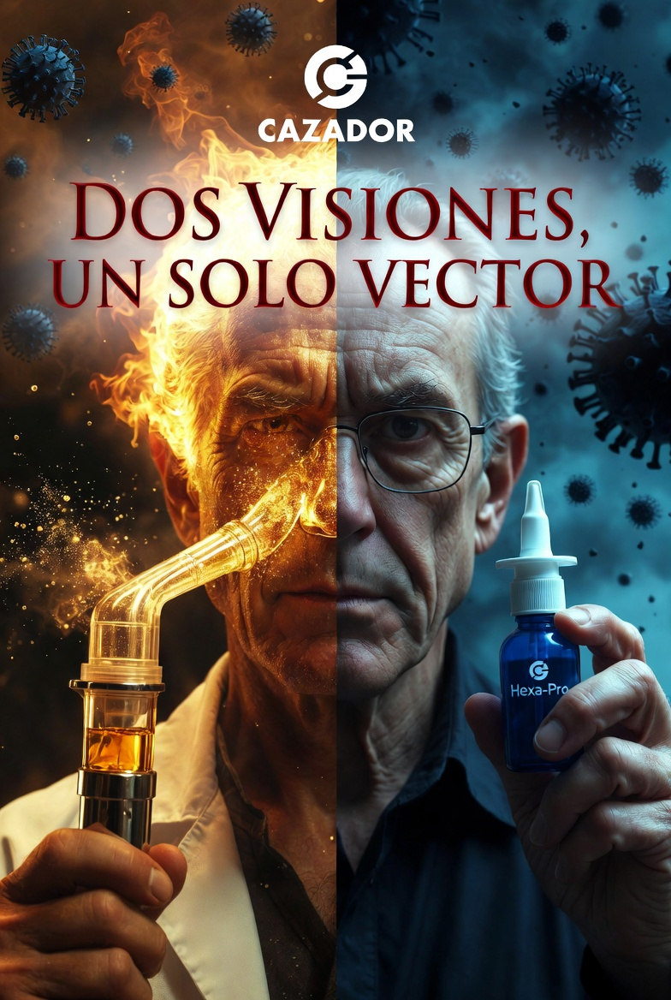
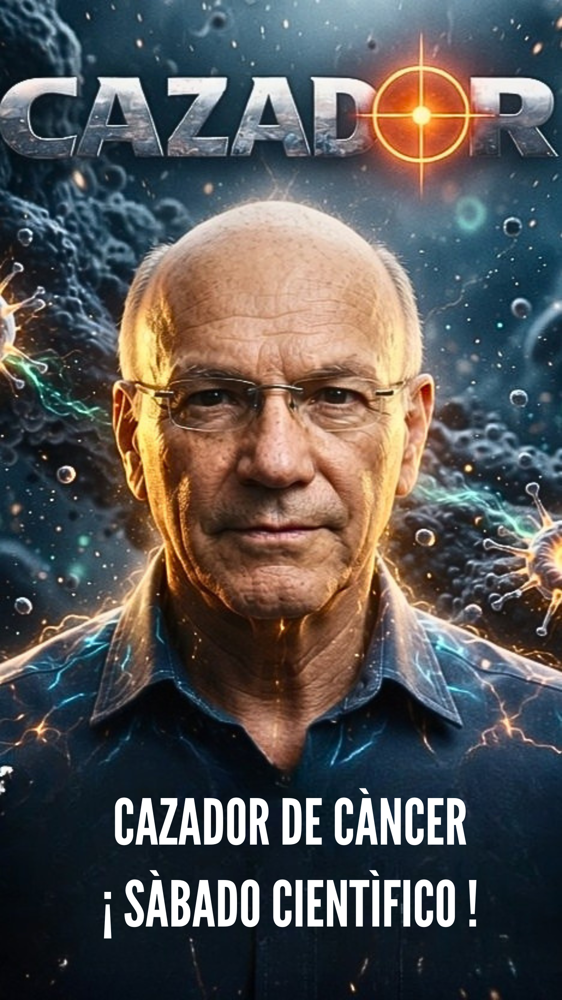
Entender la vida… es el primer paso para defenderla
▶ Ver Video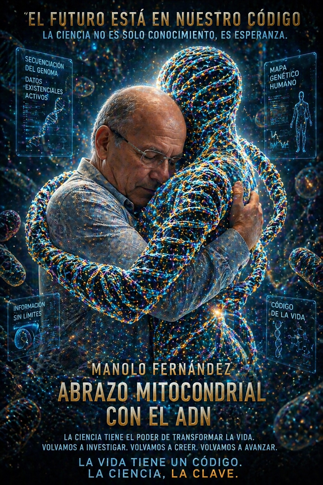
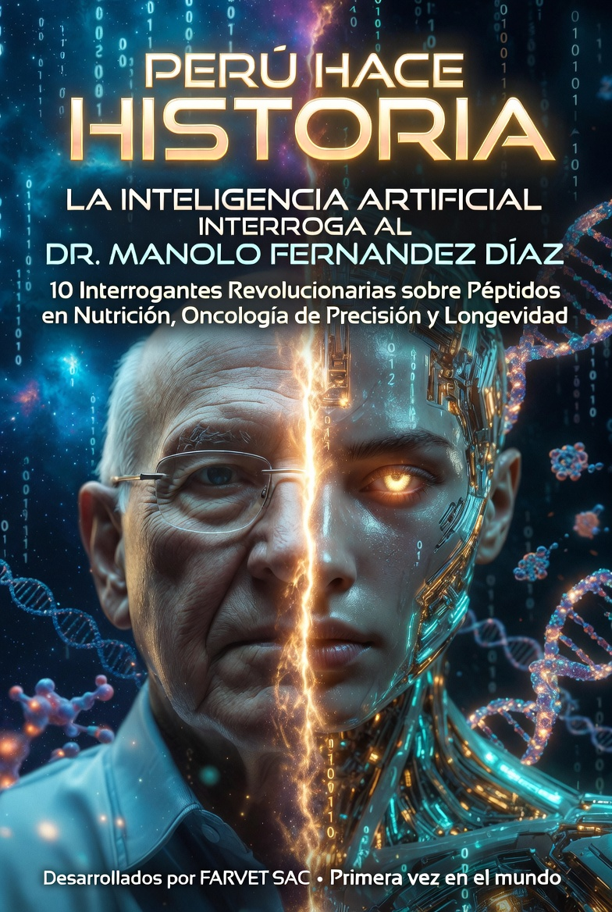
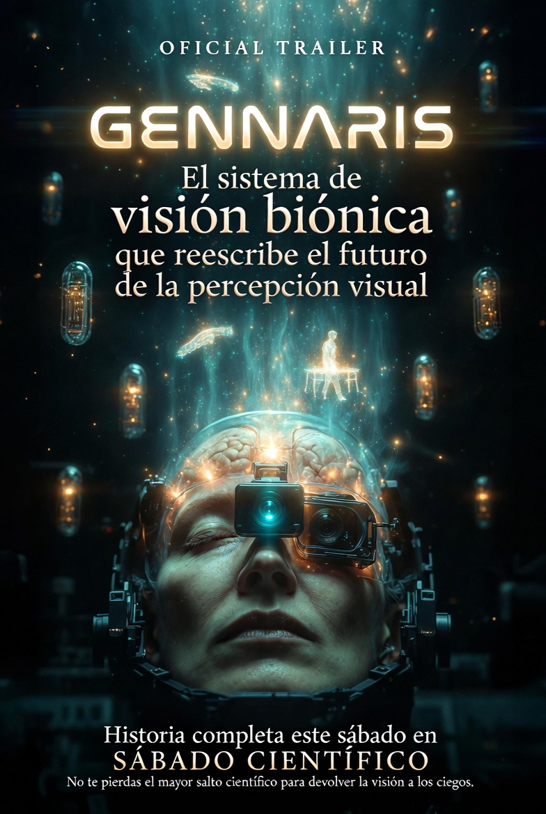
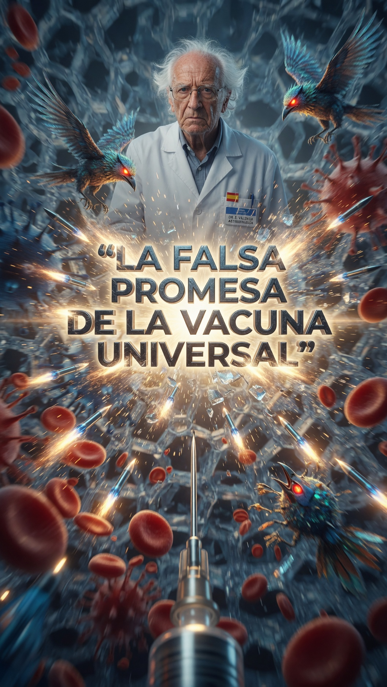
Espacio de pensamiento crítico · Historia, fuego y responsabilidad

REFLEXIÓN II · POLÍTICA
Pensamiento crítico desde San Marcos — Dr. Manolo Fernández Díaz
▶ Ver Video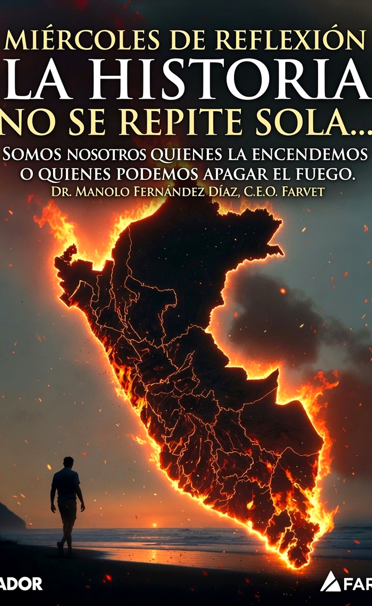
REFLEXIÓN I · HISTORIA
Somos nosotros quienes la encendemos o quienes podemos apagar el fuego — Dr. Manolo Fernández Díaz
▶ Ver Video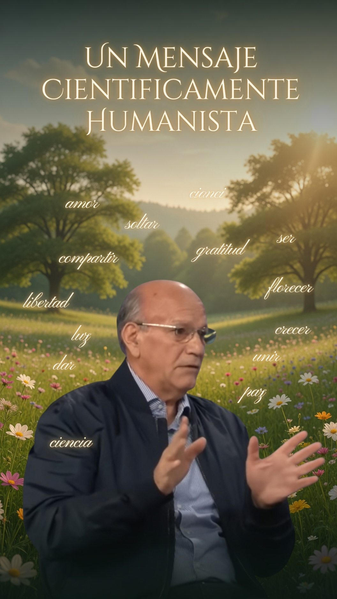
Mensaje científicamente humanista que busca la armonía consigo mismo
▶ Ver Video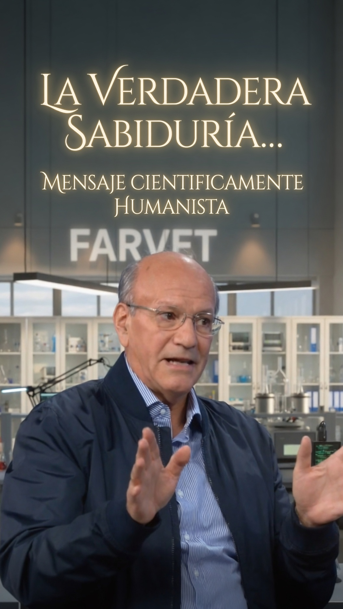
Reflexión reciente del Dr. Manolo Fernández Díaz
▶ Ver VideoAvances espectaculares · Ciencia en formato de cine

PROMO I · SÁBADO
Saturday Science — La ciencia peruana en su máxima expresión
▶ Ver Video
CAPÍTULO XI · EN VIVO
Ph.D. Dr. Manolo Fernández Díaz — Ciencia sin filtros
▶ Ver Video
CAPÍTULO XII · VIROLOGÍA
Ciencia veterinaria en acción — FARVET · CAZADOR Ciencia Peruana
▶ Ver Video
CAPÍTULO XV · CAZADOR
La ciencia que protege al Perú — Dr. Manolo Fernández Díaz
▶ Ver Video1. El Perú es un Gigante
2. Farvet y Base2Bio
3. Dos Visiones Un Solo Vector Contra El Covid 19
4. Hantavirus: Entre el miedo, la verdad y la manipulación social